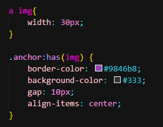
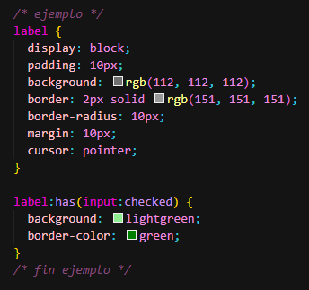

Contenido de la sección 1.
PSEUDOCLASES CSS
Introducción a CSS intermedio/avanzado
¿Qué son las Pseudoclases?
Las pseudoclases son selectores especiales que nos permiten aplicar estilos a elementos basándose en su estado o posición, sin necesidad de agregar clases adicionales en el HTML. Se identifican por el símbolo : (dos puntos).
selector:pseudoclase {
propiedad: valor;
}
Diferencia clave: Pseudoclases vs Pseudo-elementos
✅ Pseudoclases (un :)
Seleccionan elementos basándose en su estado o posición
button:hover { }
❌ Pseudo-elementos (dos ::)
Crean elementos virtuales o seleccionan partes específicas
p::before { }
Pseudoclases de Estado
:hover
Se activa cuando el usuario pasa el cursor sobre el elemento.
¡Pasa el cursor sobre mí!
.hover-demo:hover {
transform: scale(1.1) rotate(2deg);
box-shadow: 0 0 20px rgba(0, 245, 255, 0.5);
background: linear-gradient(135deg, #f093fb 0%, #f5576c 100%);
}
:focus
Se activa cuando un elemento recibe el foco (generalmente mediante tabulación o clic).
.focus-demo:focus {
outline: none;
box-shadow: 0 0 20px var(--primary-color);
background: rgba(0, 245, 255, 0.1);
transform: scale(1.05);
}
:active
Se activa mientras el usuario mantiene presionado el elemento.
.active-demo:active {
transform: scale(0.95);
}
Pseudoclases Estructurales
:nth-child()
Selecciona elementos basándose en su posición entre hermanos.
1
2
3
4
5
6
7
8
9
/* Elementos impares (1, 3, 5...) */
.nth-item:nth-child(odd) {
background: var(--gradient-1);
transform: rotate(5deg);
}
/* Elementos pares (2, 4, 6...) */
.nth-item:nth-child(even) {
background: var(--gradient-2);
transform: rotate(-5deg);
}
/* Cada tercer elemento (3, 6, 9...) */
.nth-item:nth-child(3n) {
background: var(--gradient-4);
transform: scale(1.2);
border-radius: 50%;
}
:first-child y :last-child
Seleccionan el primer y último hijo respectivamente.
Primer hijo
Hijo del medio
Otro hijo
Último hijo
.child-item:first-child {
background: var(--gradient-1);
transform: scale(1.1);
box-shadow: 0 0 20px rgba(0, 245, 255, 0.5);
}
.child-item:last-child {
background: var(--gradient-2);
transform: scale(1.1);
box-shadow: 0 0 20px rgba(255, 0, 110, 0.5);
}
:not() - La Pseudoclase de Negación
Selecciona todos los elementos que NO coinciden con el selector especificado.
Normal
Especial
Normal
Normal
/* Todos los elementos EXCEPTO los que tienen clase 'special' */
.not-item:not(.special) {
opacity: 0.5;
filter: grayscale(100%);
}
.not-item.special {
background: var(--gradient-4);
transform: scale(1.1);
box-shadow: 0 0 20px rgba(67, 233, 123, 0.5);
}
:has
El combinador o pseudoclase :has() permite seleccionar un elemento contenedor, siempre y cuando sus elementos hijos (descendientes) cumplan los criterios indicados por los parámetros de :has(), lo que comunmente siempre se ha denominado el selector padre.

ancla sin imagen
.png) ancla con imagen
ancla con imagen
- En el primer caso, aplicamos estilos a TODOS los enlaces
- En el segundo caso, aplicamos estilos a todos los enlaces que contengan una imagen
Sin embargo, recuerda que podemos añadir más selectores antes, después o el interior del :has(), consiguiendo criterios más complejos y potentes.
Selector de estados :has()
Quizás el detalle más interesante del combinador o selector :has() es que lo podemos utilizar para controlar estados de ciertos elementos de la página. Para ello, podemos utilizar pseudoclases como :checked o :hover, por ejemplo. El siguiente ejemplo permite cambiar el diseño de un elemento, dependiendo de una casilla que no tiene relación directa:.
Esto abre la puerta a interacciones dinámicas puramente con CSS, sin depender de JavaScript para detectar acciones del usuario.

Este patrón es especialmente útil en formularios o interfaces interactivas, donde se desea mostrar visualmente un estado activo o seleccionado, y tradicionalmente requería JavaScript para lograrse.
Observa que gracias a :has(), ahora es posible realizar este tipo de comportamiento de forma declarativa y limpia directamente desde el CSS.
Selector contextual :has()
Contenido de la sección 2.
Contenido de la sección 3.
Detalles importantes sobre :has()
Algunos detalles interesantes sobre la pseudoclase funcional :has():
- La pseudoclase :has() no se puede anidar dentro de otra :has().
- Los pseudoelementos, como ::before o ::after, no funcionan dentro de :has().
- La especificidad de :has() es el valor más alto de los selectores indicados por parámetro.
:root
Selecciona el elemento raíz del documento (generalmente <html>). Es perfecto para definir variables CSS globales.
Variables CSS definidas en :root
Primary Color
Secondary Color
Accent Color
:root {
--primary-color: #00f5ff;
--secondary-color: #ff006e;
--accent-color: #8338ec;
--bg-dark: #0a0a0a;
--shadow-neon: 0 0 20px rgba(0, 245, 255, 0.5);
}
/* Usar las variables en cualquier parte */
.element {
background: var(--primary-color);
box-shadow: var(--shadow-neon);
}
💡 Ventajas de usar :root
- Centraliza todos los valores de diseño
- Facilita el cambio de temas
- Mejora la consistencia visual
- Simplifica el mantenimiento del código
Otras Pseudoclases Esenciales
:empty
Selecciona elementos vacíos
div:empty {
display: none;
}:checked
Checkboxes/radios marcados
input:checked {
transform:
scale(1.2);
}:valid / :invalid
Validación de formularios
input:invalid {
border-color: red;
}Preguntas Frecuentes
❓ ¿Por qué :has() no funciona en mi navegador?
:has() es una característica relativamente nueva (CSS4). Funciona en:
• Chrome 105+ ✅
• Firefox 121+ ✅
• Safari 15.4+ ✅
Para navegadores antiguos, usa JavaScript como alternativa.
• Chrome 105+ ✅
• Firefox 121+ ✅
• Safari 15.4+ ✅
Para navegadores antiguos, usa JavaScript como alternativa.
❓ ¿Puedo combinar múltiples pseudoclases?
¡Absolutamente! Puedes encadenar pseudoclases:
Esto selecciona un botón que está siendo hover, no está deshabilitado Y es el primer hijo.
button:hover:not(:disabled):first-child { }
❓ ¿Cuándo usar :root en lugar de html?
:root tiene mayor especificidad que html y es más semánticamente correcto para variables CSS. Además, :root funciona en documentos XML, mientras que html solo en HTML.
❓ ¿Las pseudoclases afectan el rendimiento?
Las pseudoclases básicas (:hover, :focus) tienen impacto mínimo. :has() puede ser más costosa porque debe evaluar descendientes. Úsala con moderación en elementos con muchos hijos.
❓ ¿Cómo debuggear pseudoclases que no funcionan?
1. Verifica la sintaxis (un solo : para pseudoclases)
2. Usa las DevTools para inspeccionar el estado del elemento
3. Comprueba la especificidad CSS
4. Asegúrate de que el elemento sea del tipo correcto
5. Verifica compatibilidad del navegador
2. Usa las DevTools para inspeccionar el estado del elemento
3. Comprueba la especificidad CSS
4. Asegúrate de que el elemento sea del tipo correcto
5. Verifica compatibilidad del navegador
🚀 Consejos
💡 Tip #1: Especificidad
Las pseudoclases tienen la misma especificidad que las clases (0,0,1,0). Úsalas estratégicamente para evitar conflictos.
🎯 Tip #2: Accesibilidad
Siempre incluye :focus junto con :hover para usuarios que navegan con teclado.
⚡ Tip #3: Rendimiento
Evita pseudoclases complejas en elementos que cambian frecuentemente. Prefiere clases JavaScript cuando sea necesario.
🎨 Tip #4: Animaciones
Combina pseudoclases con transitions para crear efectos suaves y profesionales.
💡 Actividad: Pseudoclases CSS - Ejercicios Prácticos
-
:hover
Crea un botón que:- Cambie de color y tamaño cuando el mouse pase sobre él.
-
:focus
Crea un<input>que:- Muestre un borde brillante y cambie el fondo al hacer clic o tabular hacia él.
-
:active
Crea un botón que:- Se reduzca ligeramente de tamaño al presionarlo.
-
:checked
Usa un<checkbox>que:- Cambie el color del texto del
<label>cuando esté marcado.
- Cambie el color del texto del
-
:nth-child()
Crea una lista con varios ítems donde:- Los elementos impares tengan un color de fondo distinto.
- El tercer elemento sea más grande o con otro color llamativo.
-
:not()
Crea varias tarjetas<div class="card">donde:- Se aplique un estilo solo a las que NO tengan clase
.especial.
- Se aplique un estilo solo a las que NO tengan clase
-
:empty
Agrega varios<div>vacíos y con contenido. Luego:- Oculta los elementos vacíos usando
:empty.
- Oculta los elementos vacíos usando
-
:first-child / :last-child
Usa una lista u otra estructura donde:- El primer hijo tenga fondo verde.
- El último tenga fondo rojo.
-
:invalid / :valid
Crea un formulario que:- Muestre en rojo los campos con errores (ej. email mal escrito).
- Muestre en verde los campos válidos.
-
:has() *(solo funciona en Chrome/Edge/Safari)*
Aplica estilos al padre cuando:- Contenga un
.highlight. - Tenga un
input:invalid.
📌 Si no funciona en tu navegador, indícalo en tu entrega.
- Contenga un